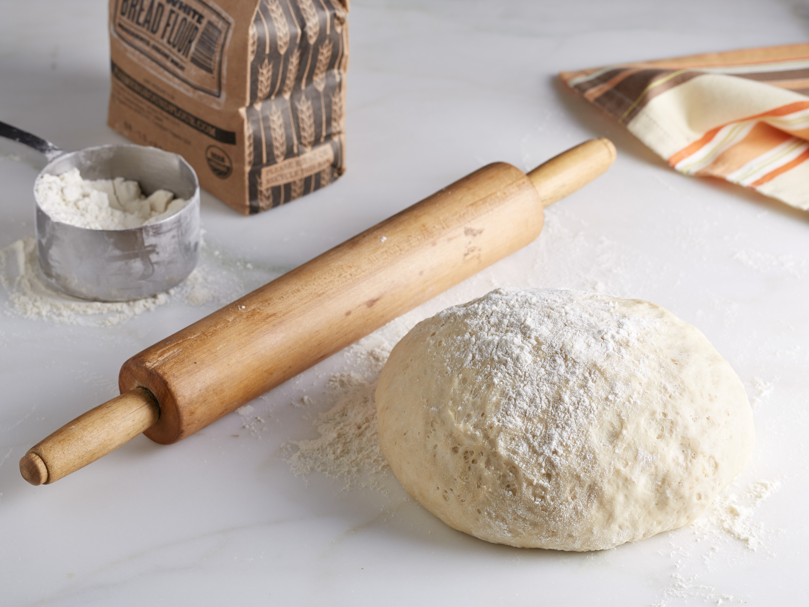
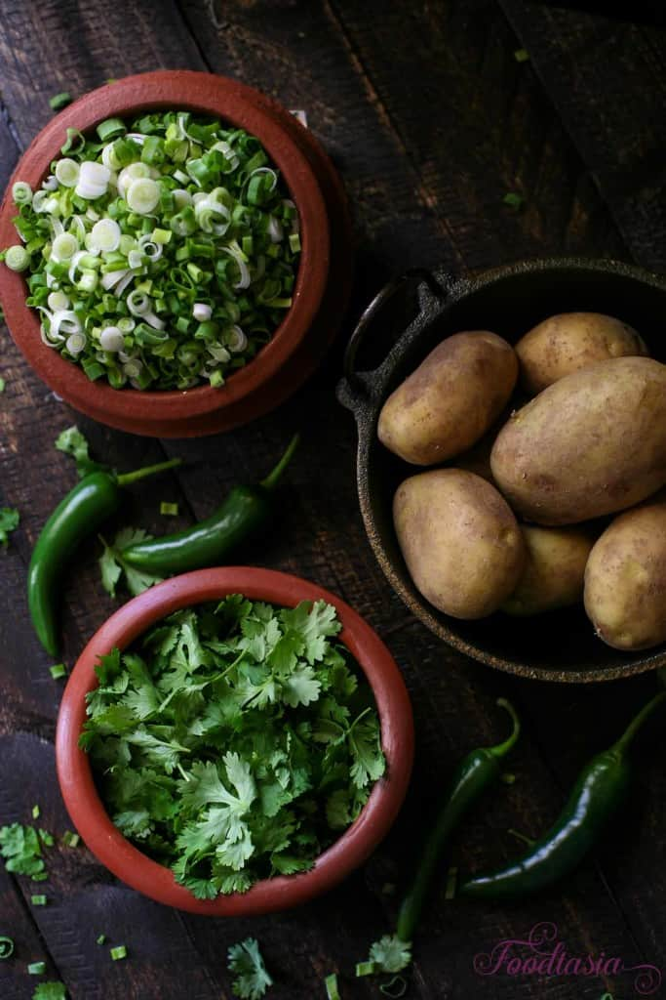
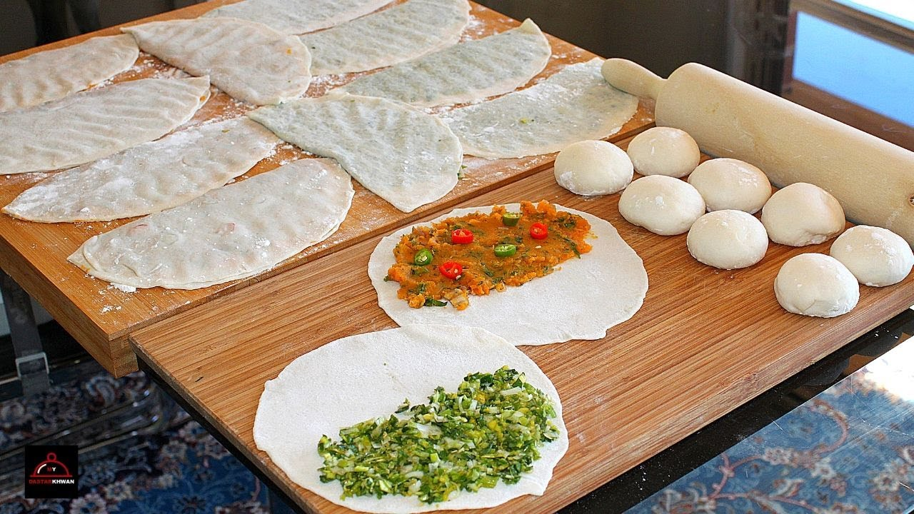

- - 3 1/2 cups all-purpose flour (580g)
- - 2 tablespoon oil
- - 1 1/4 cups water (300g)
- - 1 1/2 pounds potatoes (680g)
- - 2 cups, packed sliced green onion
- - 2 cups packed cilantro (60g)
- - 1/2 cup chopped green pepper (60g)
- - 1 teaspoon black pepper
- - 1 teaspoon salt
- combine flour, salt, and oil in the bowl of a food processor. with the motor running, add water until the dough comes together in a ball. It should not be too sticky or too dry. You may use a little more or less water than 300g.
- Remove the dough from the processor and give it a couple of kneads on the counter. Wrap in plastic and let rest about 20 minutes.
- Wash potatoes, prick with a fork, and boil until soft, approximately 10 minutes depending on the size of your potatoes. Potatoes are done when you can easily pierce them with a knife and they feel soft.
- When the potatoes are finished and cool enough to handle, remove the skins and coarsely mash with a fork.
- Roughly chop the cilantro.
- In a skillet, heat olive oil.
- Sauté green pepper for 1 minute.
- Add green onion and sauté for 2 minutes.
- Turn off the heat and stir in chopped cilantro, salt, and peppers.
- Gently stir in the potatoes.
- Divide the dough into 8 equal pieces and roll into balls. Keep them covered on the counter while you roll them out.
- Divide the filling into 8 equal portions.
- Roll out a ball of dough on a lightly floured surface to a 8-9 inch circle.
- Put a portion of filling on the top half of the circle, leaving a half inch border around the edges.
- Fold the bottom half up over the top half and seal the edges with dabing water on the edges and pressing firmly all around the edge to seal it shut.
- Repeat with the remaining balls of dough.
- Heat 2 tablespoons oil in a large skillet on medium high.
- One by one, shallow fry the bolani one one side until golden brown. Flip and fry on the other side til golden brown. Press down gently on the edges of the bolani while cooking to ensure that they brown evenly.
- Place cooked bolani on a metal cooling rack while the others finish to stay crispy.



